Пит-лейн у двери
Гонки
Пит-волл вместо коридора: узкая консоль, трек-свет на рейле, постер Гран-при Испании и обувной шкаф глубиной до 45 см — ровно по чертежу.
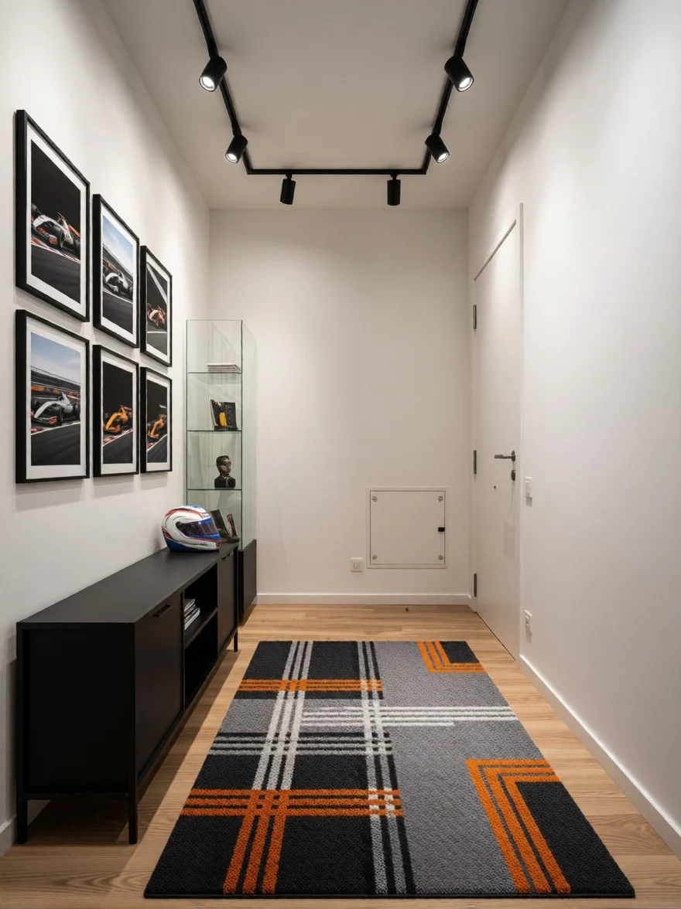
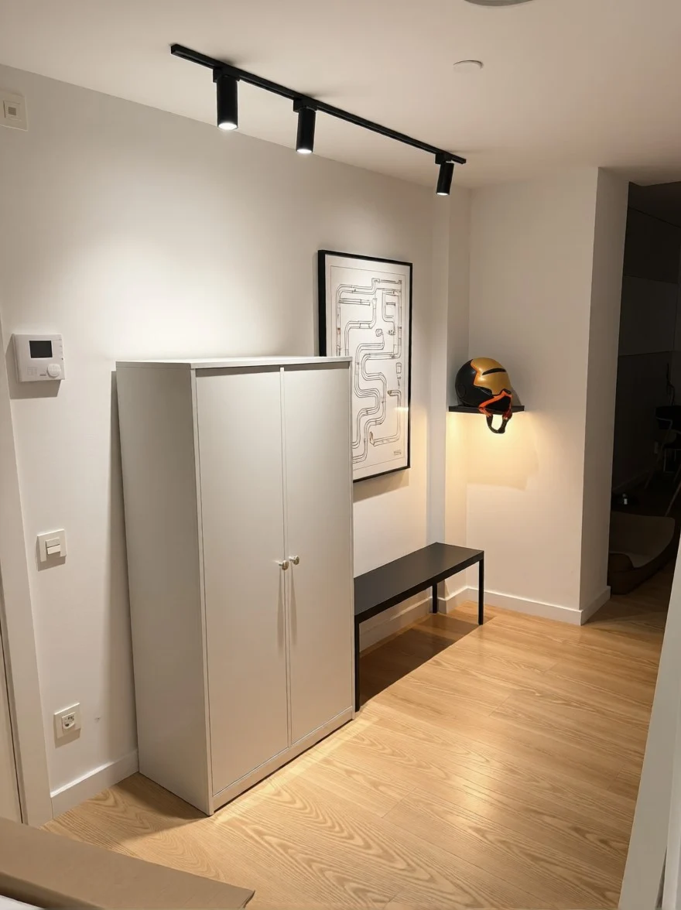
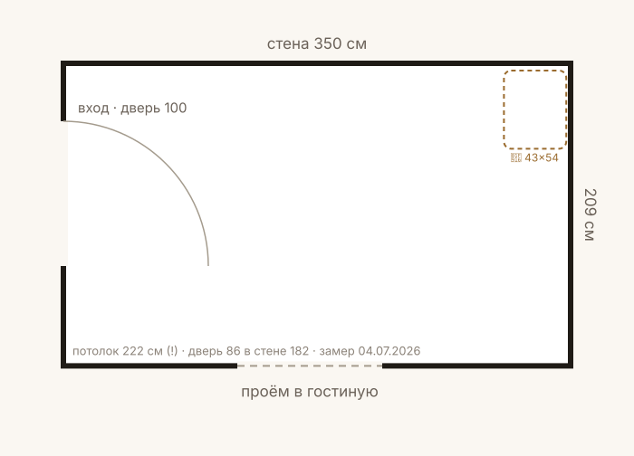
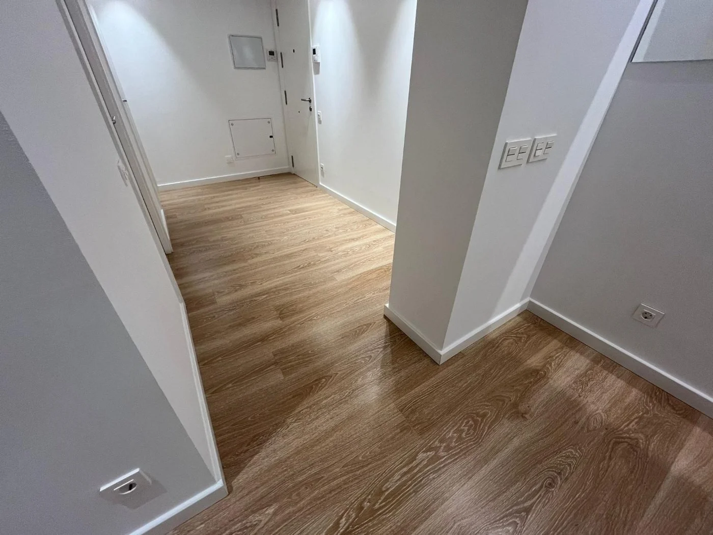
✓ Габариты каждого предмета проверены по чертежу (fit-check)
Минимум — только необходимое. Итого 284 €.
-
 IKEA BISSA обувной шкаф 3 секции, чёрно-коричневыйГлубина 28 ≤ 45 см у прохода; высота 135 < 210. Рядом оставить нишу 45x55 см — парковка док-станции робота (43x54x45). Цена под…50 €Купить
IKEA BISSA обувной шкаф 3 секции, чёрно-коричневыйГлубина 28 ≤ 45 см у прохода; высота 135 < 210. Рядом оставить нишу 45x55 см — парковка док-станции робота (43x54x45). Цена под…50 €Купить -
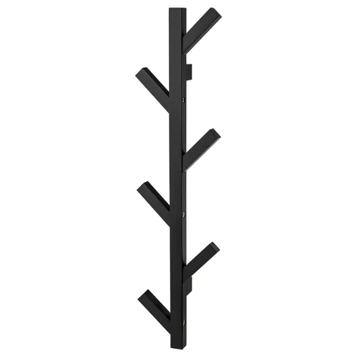
IKEA TJUSIG настенная вешалка, чёрная, 78 см6 крючков, чёрный массив дерева — 'пит-лейн' зона на стене 182 см. Сверлить в аренде можно.16 €Купить -
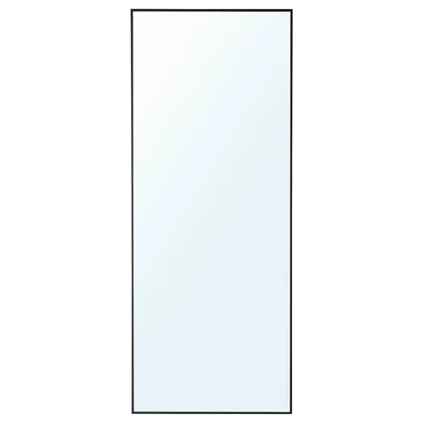
IKEA HOVET зеркало, чёрное, 78x196196 < 222 (потолок): ставится с наклоном к стене с анти-скольжением или вешается. Чёрная рама = ядро гоночной палитры, визуальн…149 €Купить -
 Leroy Merlin Dakata INSPIRE трек-шина 3 поворотных спота, чёрная, GU10Шина 98,25 см, алюминий чёрный, на потолок — споты направить на постеры. Лампы GU10 взять янтарные 2200-2700K (амбра). Цена 39,…40 €Купить
Leroy Merlin Dakata INSPIRE трек-шина 3 поворотных спота, чёрная, GU10Шина 98,25 см, алюминий чёрный, на потолок — споты направить на постеры. Лампы GU10 взять янтарные 2200-2700K (амбра). Цена 39,…40 €Купить -
 IKEA RÖDALM рама, чёрная, 61x91Чёрная рама под печать 61x91 (или 50x70 с паспарту). Вешается над BISSA.23 €Купить
IKEA RÖDALM рама, чёрная, 61x91Чёрная рама под печать 61x91 (или 50x70 с паспарту). Вешается над BISSA.23 €Купить -
 Etsy минималистичный F1 Grid постер (цифровой файл, печать 61x91)Формат 24x36" (2:3) = ровно под RÖDALM 61x91. При заказе выбрать монохром/графит без красного; печать в копицентре ~10-15€ отде…6 €Купить
Etsy минималистичный F1 Grid постер (цифровой файл, печать 61x91)Формат 24x36" (2:3) = ровно под RÖDALM 61x91. При заказе выбрать монохром/графит без красного; печать в копицентре ~10-15€ отде…6 €Купить
Средний — оптимум — рекомендуем. Итого 801 €.
-
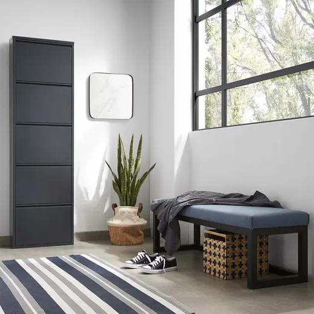
Kave Home Ode обувной шкаф 5 откидных секций, металл, тёмно-серый графит, 50x168,5Апгрейд BISSA: цельнометаллический графит = сталь из палитры F1. Глубина всего 15 см, высота 168,5 < 210. Цена 199€ подтвержден…199 €Купить -
IKEA TJUSIG настенная вешалка, чёрная, 78 смИз min-пакета без изменений.16 €Купить
-
IKEA HOVET зеркало, чёрное, 78x196Из min-пакета. 196 < 222, ок.149 €Купить
-
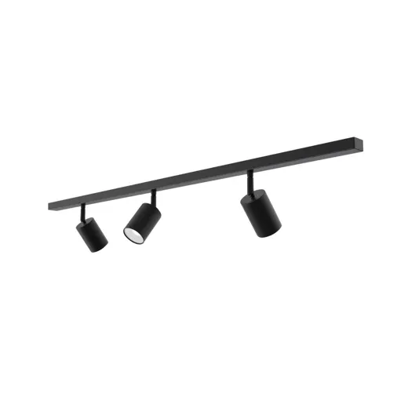
Leroy Merlin Dakata INSPIRE трек-шина 3 спота, чёрнаяИз min-пакета; споты на витрину и постеры, лампы янтарные 2200-2700K.40 €Купить -
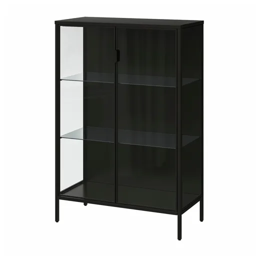
IKEA RUDSTA витрина, антрацит, 80x37x120 — под шлемВитрина для шлема/крупных моделей; антрацит = графит. Глубина 37 ≤ 45; есть кабель-каналы под LED-подсветку. Цена 139€ подтверж…139 €Купить -
 IKEA BLÅLIDEN/STRIMSÄV витрина с LED-подсветкой, чёрная, 35x32x151 — под модели 1:18Узкая чёрная витрина со встроенным LED-спотом — колонна для болидов 1:18/1:43. Глубина 32 ≤ 45, высота 151 < 210. Цена 89,98€ п…90 €Купить
IKEA BLÅLIDEN/STRIMSÄV витрина с LED-подсветкой, чёрная, 35x32x151 — под модели 1:18Узкая чёрная витрина со встроенным LED-спотом — колонна для болидов 1:18/1:43. Глубина 32 ≤ 45, высота 151 < 210. Цена 89,98€ п…90 €Купить -
 Automobilist FORMULA 1 Gran Premio de España 2025 — официальный постерБолид сверху на фоне азулехос, тёплая янтарно-песочная гамма (амбра). Доставка из ЕС в тубусе. Рама — RÖDALM 61x91 negro с пасп…69 €Купить
Automobilist FORMULA 1 Gran Premio de España 2025 — официальный постерБолид сверху на фоне азулехос, тёплая янтарно-песочная гамма (амбра). Доставка из ЕС в тубусе. Рама — RÖDALM 61x91 negro с пасп…69 €Купить -
 Automobilist Williams FW14B 1992 World Champion, 50x70Ливрея сине-жёлто-белая — без красного. Лимитированная серия 500 шт, музейная печать 175 г/м². EU-цена 99€ (подтв. 04.07.2026;…99 €Купить
Automobilist Williams FW14B 1992 World Champion, 50x70Ливрея сине-жёлто-белая — без красного. Лимитированная серия 500 шт, музейная печать 175 г/м². EU-цена 99€ (подтв. 04.07.2026;…99 €Купить
Максимум — полный сет. Итого 1 492 €.
-
 Kave Home Ode обувной шкаф 5 секций, металл графит, 50x168,5Из mid-пакета. Между Ode и углом стены 182 см оставить нишу 45x55 см — парковка робота (43x54x45).199 €Купить
Kave Home Ode обувной шкаф 5 секций, металл графит, 50x168,5Из mid-пакета. Между Ode и углом стены 182 см оставить нишу 45x55 см — парковка робота (43x54x45).199 €Купить -
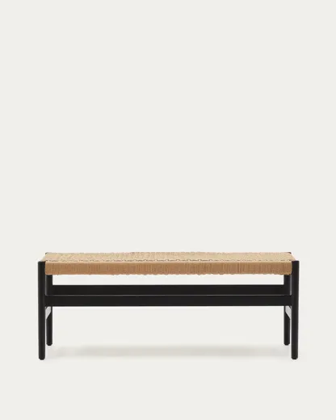
Kave Home Zaide банкетка, массив дуба чёрный + плетёный шнур, 120 смЧёрный дуб FSC, глубина ровно 45 = предел прохода — ставить на основную стену 350 под TJUSIG. Цена 399€ подтверждена у оф. диле…399 €Купить -
IKEA RUDSTA витрина, антрацит, 80x37x120 — под шлемШлем-витрина; сверху зона для кубка/декора. Добавить LED-ленту тёплую (амбра) через штатные кабель-каналы.139 €Купить
-
 IKEA RUDSTA витрина узкая, антрацит, 42x37x155 — колонна под моделиПара к витрине 80 см — единая антрацитовая линейка 'бокса команды'. 155 < 210, глубина 37 ≤ 45. Цена 99,99€ подтверждена.100 €Купить
IKEA RUDSTA витрина узкая, антрацит, 42x37x155 — колонна под моделиПара к витрине 80 см — единая антрацитовая линейка 'бокса команды'. 155 < 210, глубина 37 ≤ 45. Цена 99,99€ подтверждена.100 €Купить -
IKEA HOVET зеркало, чёрное, 78x196Вешается на стену у двери 86 см (экономия пола). 196 < 222.149 €Купить
-
IKEA TJUSIG настенная вешалка, чёрная, 78 смМонтаж над банкеткой Zaide на высоте ~165 см.16 €Купить
-
Leroy Merlin Dakata INSPIRE трек-шина 3 спота, чёрнаяПотолочный трек вдоль стены 350: споты на обе витрины и постеры. Янтарные GU10 2200K = амбра-подсветка.40 €Купить
-
 Kartell Componibili Metal, хром, 3 модуля, Ø32x58,5Полированная 'сталь' — иконка дизайна как пит-тумба для ключей/перчаток, у зеркала. Ø32 не сужает проход. Цена 281,60€ с оф. са…282 €Купить
Kartell Componibili Metal, хром, 3 модуля, Ø32x58,5Полированная 'сталь' — иконка дизайна как пит-тумба для ключей/перчаток, у зеркала. Ø32 не сужает проход. Цена 281,60€ с оф. са…282 €Купить -
Automobilist FORMULA 1 Gran Premio de España 2025 — официальный постерОформить в чёрную раму RÖDALM 50x70 (или багетную мастерскую). Янтарно-песочная гамма; проверить отсутствие красного при заказе.69 €Купить
-
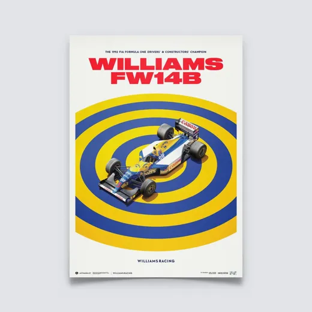
Automobilist Williams FW14B 1992 World Champion, 50x70, Limited EditionМонохромно-синяя ливрея без красного. Пара к постеру Испании над витринами. EU-цена 99€ (US-магазин показывает $119).99 €Купить